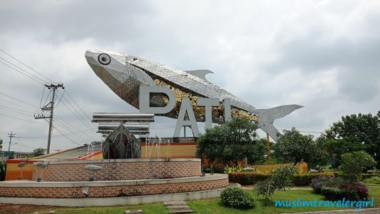
Selamat datang di Website
Pemerintah Kabupaten Pati
Pati Bumi Mina Tani

Kepala LLDIKTI Wilayah VI Serahkan SK Izin Penggabungan dan Pendirian Universitas Safin Pati
Kabupaten Pati yang terkenal dengan semboyan “Pati Bumi Mina Tani” merupakan satu wilayah di sisi utara Provinsi Jawa Tengah, yang sampai dengan awal tahun 2023 ini telah terdapat sejumlah 3 (tiga) perguruan tinggi. Upaya untuk meningkatkan pendidikan tinggi di kabupaten Pati yang berasal dari unsur masyarakat senantiasa bertambah, salah satunya dengan pendirian Universitas Safin Pati yang secara resmi telah menerima Surat Keputusan (SK) Menteri Pendidikan, Kebudayaan, Riset dan Teknologi (Mendikbudristek) pada hari Selasa 21/3.
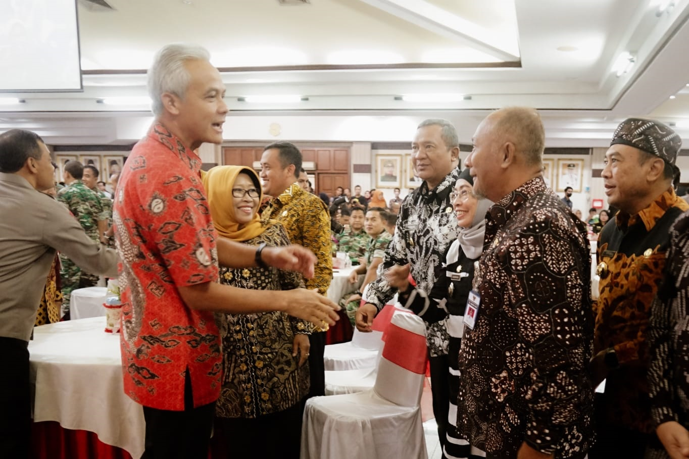
Tak Ada PPKM, Persiapan Sambut Pemudik Jadi Fokus Rakor Forkopimda
Pj Bupati Pati Henggar Budi Anggoro menghadiri Rapat Forum Koordinasi Pimpinan Daerah Provinsi Jawa Tengah dengan tema "Menjaga Kondusivitas Wilayah Jawa Tengah Dalam Rangka Menyambut Hari Raya Idul Fitri 2023/1444 H" di Gedung Gradhika Bhakti Praja Kantor Gubernur Jawa Tengah, Jum"at (31/3).
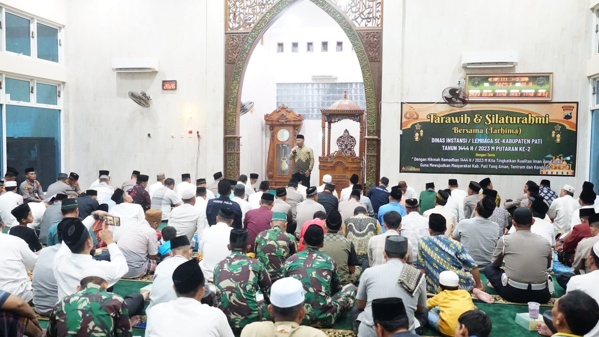
Pj Bupati Sebut Urgensi Tarhima dalam Meningkatkan Keimanan dan Ketakwaan
Bertempat di Masjid Al Ikhlas Polresta Pati, Pj Bupati Pati Henggar Budi Anggoro, Kamis (30/3), mengikuti Tarawih dan Silaturahim Bersama (Tarhima) putaran kedua.
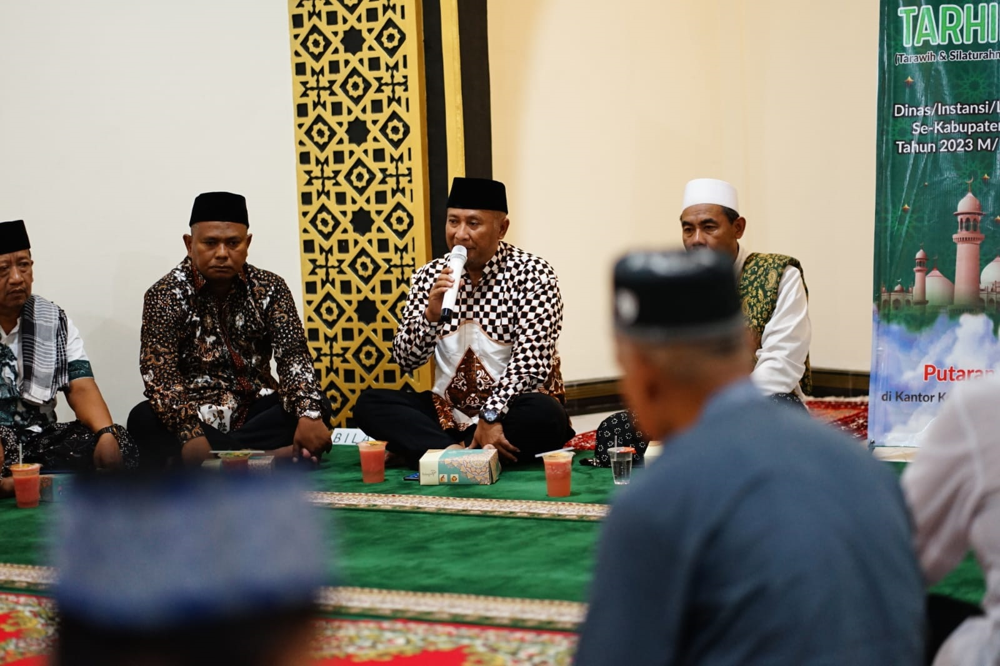
Lewat Tarhima Momentum Pj Bupati Terima Masukan Masyarakat
Memasuki bulan suci Ramadhan Pemerintah Kabupaten Pati melaksanakan Tarawih dan Silaturahmi Bersama (TARHIMA) Dinas/Instansi/Lembaga se Kabupaten Pati Tahun 1444 H / 2023M.Cari Tentang Apa?

First Thumbnail label
Cras justo odio, dapibus ac facilisis in, egestas eget quam. Donec id elit non mi porta gravida at eget metus. Nullam id dolor id nibh ultricies vehicula ut id elit.
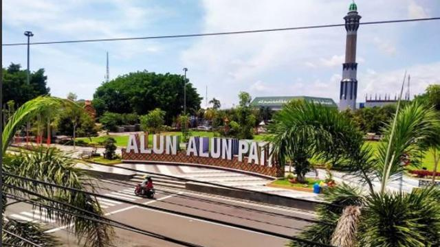
Second Thumbnail label
Cras justo odio, dapibus ac facilisis in, egestas eget quam. Donec id elit non mi porta gravida at eget metus. Nullam id dolor id nibh ultricies vehicula ut id elit.
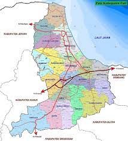
Third Thumbnail label
Cras justo odio, dapibus ac facilisis in, egestas eget quam. Donec id elit non mi porta gravida at eget metus. Nullam id dolor id nibh ultricies vehicula ut id elit.
Berita
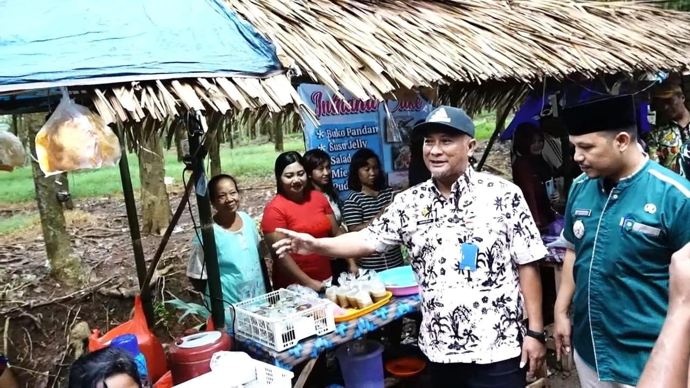
Henggar : Bazar Ramadan Desa Puncel Diharapkan Bisa Tumbuhkan Perekonomian Warga Sekitar
Penjabat Bupati Pati Henggar Budi Anggoro, Selasa sore (28/3) menghadiri bazar Kampoeng Ramadan di Desa Puncel Kecamatan Dukuhseti.
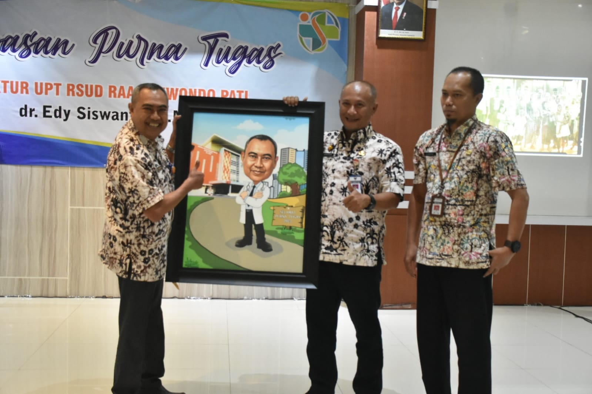
Pj Bupati Apresiasi Pengabdian Direktur RSUD RAA Soewondo
Bertempat di Aula Seruni Gedung Medik RSUD RAA Soewondo Pati, Pj Bupati Pati Henggar Budi Anggoro didampingi oleh Sekda Jumani, hari ini (28/3), menghadiri acara Pelepasan Purna Tugas Direktur Unit Pelaksanaan Teknis (UPT) RSUD RAA Soewondo Pati, dr. Edy Siswanto.
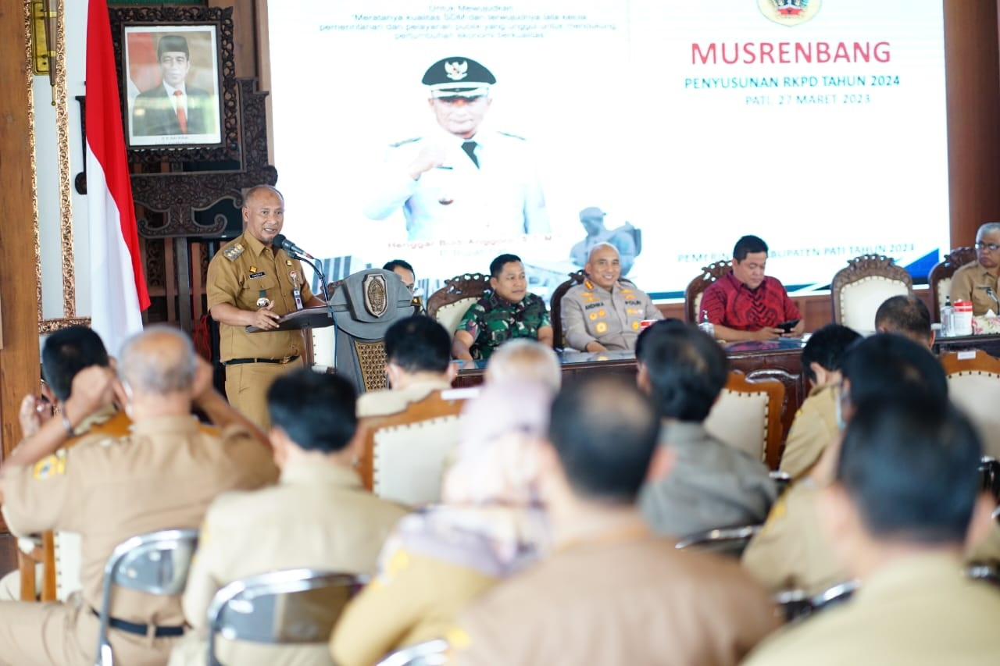
Banjir di Kabupaten Pati Masih Jadi Sorotan Dalam Musrenbang RKPD
Pemerintah Kabupaten Pati, Senin (27/3), menggelar Musyawarah Rencana Pembangunan (Musrenbang) Rencana Kerja Pembangunan Daerah (RKPD) di Pendopo Kabupaten Pati. Kegiatan ini dihadiri oleh Pj Bupati Pati Henggar Budi Anggoro, Ketua DPRD Pati, Bappeda Provinsi Jateng, Forkopimda, Organisasi Perangkat Daerah (OPD), camat, unsur LSM dan sejumlah stakeholder lainnya.Berita
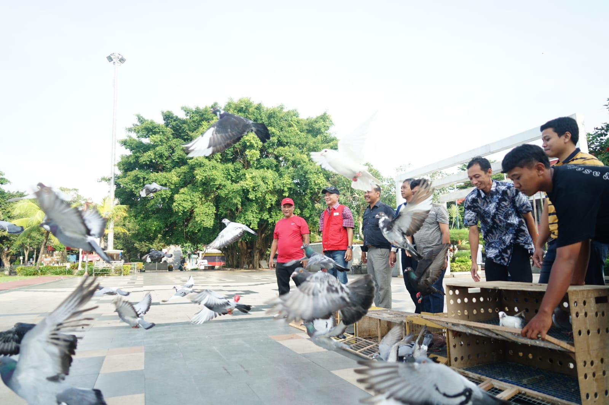
Bareng Komunitas Merpati Pos Silugonggo, Pj Bupati Lepas Merpati
Pj Bupati Pati Henggar Budi Anggoro mengikuti kegiatan yang diadakan oleh Komunitas Merpati Pos Silugonggo Pati, Sabtu (25/3) di Alun-Alun Pati.
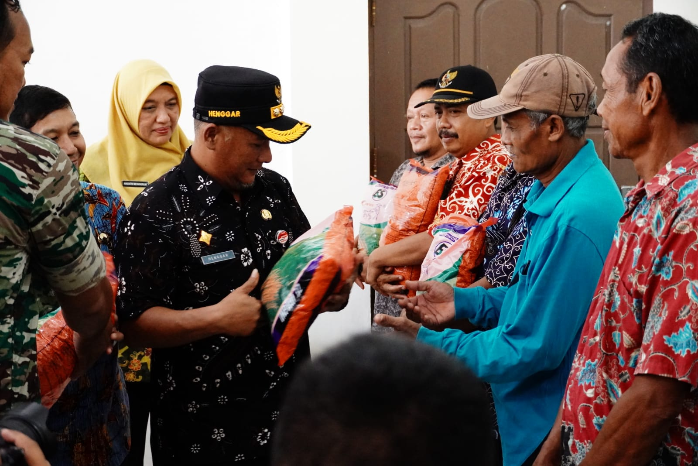
2.694 Petani Korban Banjir Dapat Bantuan Benih Padi
Dalam kesempatan itu, Henggar mengucapkan terima kasih kepada Kepala Dinas Pertanian Kabupaten Pati beserta jajarannya yang telah memfasilitasi penyerahan bantuan benih padi kepada para petani yang terkena musibah banjir beberapa waktu lalu.
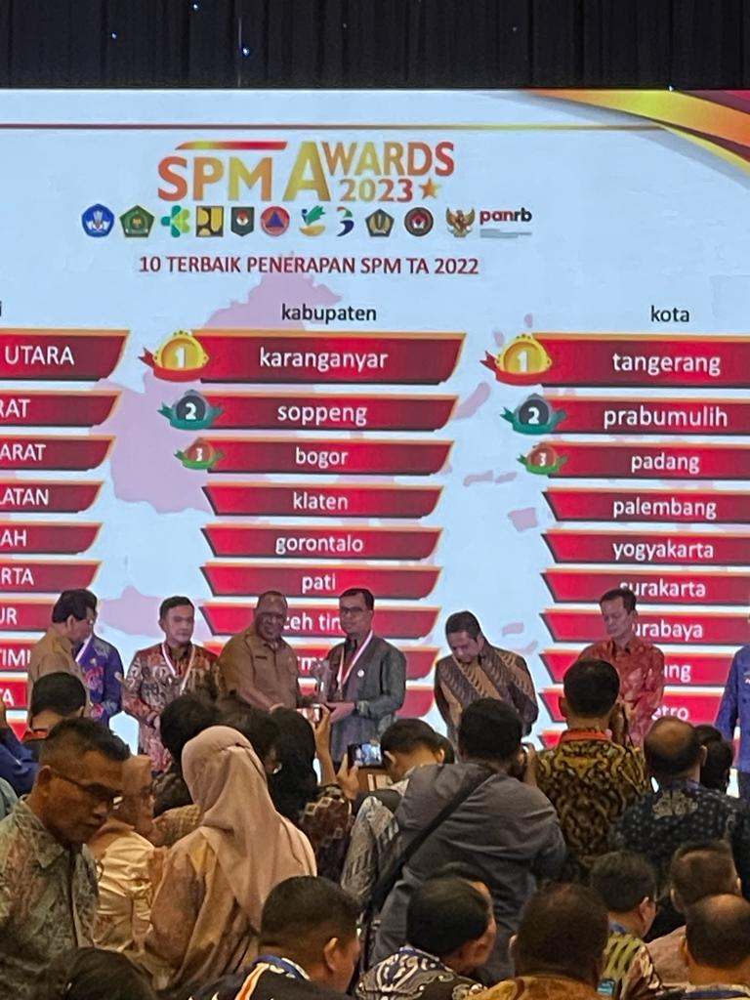